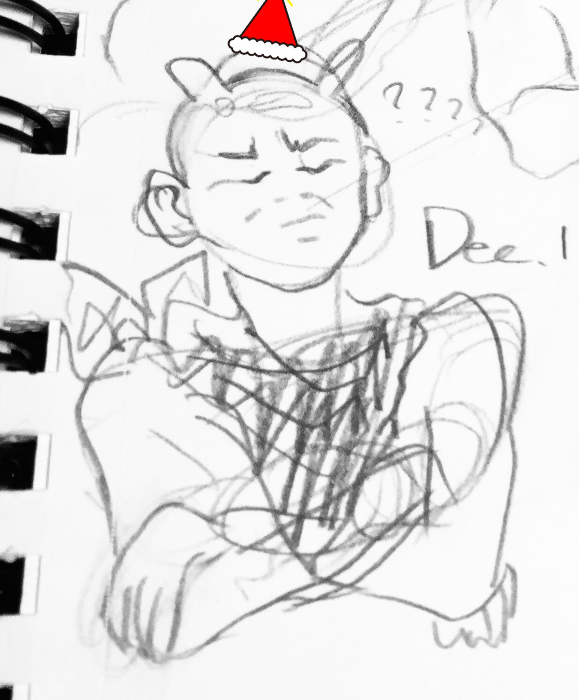

写个年终总结.今年过的很艰辛了.

{kind=link}
才发现圣诞帽漂浮在光头上面哈哈哈.
今年是很浩荡的一年呢.
我认为进入大学之后,或者说高中毕业之后,所拥有的日常就已经结束了.之后都是每日不安定的非日常生活.
可能是我小学初中,甚至到高中过的太安定了,所以突然进入社会人预备级就很有冲击了.
简略的算了算人生旅程,能忘我的潇洒的日子根本不存在嘛.那是哪个人编出的谎言,说的高中还是大学总有年轻人逃课打游戏那样不计后果的享乐生活.没有的,不存在的,什么东西都是有后果的.一不小心就要回家种田了,game over时时刻刻离自己都是很近的.
我不想回国啦!!!
真的好讨厌回国啦!!!
(指的是回国工作)
(或者是回国种田…)
说真的,我,一年比一年丧了,还一年比一年冷漠了.
明明知道这样的状态不是很有利的,但是好像也没有改变的方法.
在tt centre赶作业赶到1点那种时候,大家的大脑会产生酵母菌发酵一样神奇的反应.
还可以听到隔壁桌很认真的思考哲学与人生.
人文科有什么意义呢,都是人类所创造出来的东西.科学是精准的,但也只是人类造出来的秤罢了.
活着说到底根本没有答案嘛,结果大家一百年之后都会死掉那么活着是干嘛啦.
这种平时一直都在但是没有讨论的问题摆上桌子其实是很基本的问题了.
【终极问题】这种词是哪个人拿出来唬人的.前面的东西看不清就唬后面的人说很难哦,很高端哦.
但是大家都在往前走啊,这是没法避免的嘛.
所以嘛,所以啊.
明明已经到能合法喝酒的年龄了但是思维总觉得偏移了阳光健康的正常道路.
不不不,说不定阳光健康的那个【正常】本身就是不存在的.你想想,社会主义核心思维这种东西也是骗人的嘛.
存在不一定合理,个体也不一定了结总体.
人类真是孤独.
人志各不同,能早日意识到这份该死的孤独就早日开始自己的非日常了.
还能接受自己就行,还能喜欢着自己就行.
教副科的老师学到三十岁当上了牙医但真是实在不喜欢回去重修教育,
她说有些人这个年纪就做着喜欢的事那是份幸运.
幸运啊.
自由引领着成为自己想成为的人吧.
那先拥有自由吧.
自己的那份自由可能包含了每月收入,G牌驾照,大学文凭,面试经验,看懂地图,弄清公交车的方向和线路.
虽然我现在才刚克服最后一项(笑).
我只是最后有一点害怕.
我有努力想划分将自己和自己的环境分开来思考,但总体上来说,谁又不是环境的一部分呢.
少上网吧.
虽然这个人道的压榨青春的学校被很多毕业的学长们深爱着.
但12点走在回宿舍的路上还是想大喊一声
傻逼滑铁卢!!!!!!!
我的讲话完了.
这个人要没朋友了